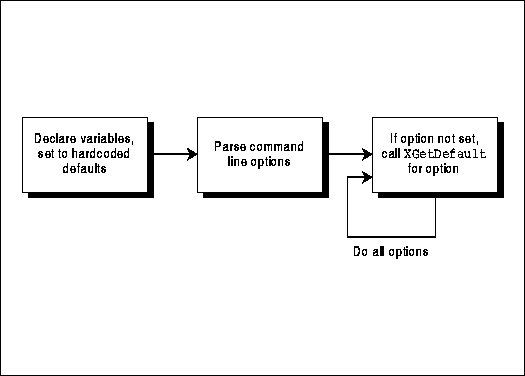
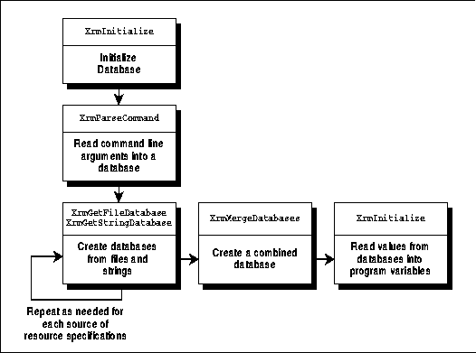
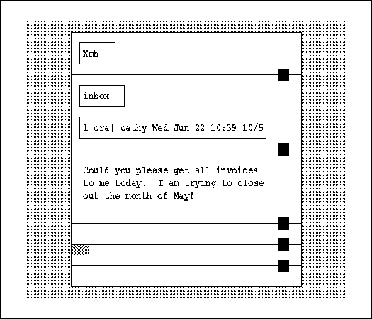

Xlib Programming Manual (O'Reilly & Associates, Inc.) |
Applications can and should be made user customizable. Every application should provide command line options for the most important configurable elements of the application, such as colors or patterns for the window border and background, foreground colors for drawing, desired geometry of the application, fonts, and so on. Furthermore, an application should allow users to set all options through the resource database.
A resource is a configurable program option (completely different from a server resource, such as a window). There are a set of resource files and resource properties that may contain settings for program options. When all the resource files and properties are merged into a single database by Xlib, the result is called the resource database. Each setting for a resource in any of these files or properties or in the resource database is called a resource specification. The routines and database structures used for managing user preferences are collectively referred to as the resource manager.
Prior to X11 Release 2, users stored their resource specifications in a file in their home directory called .Xdefaults. Additional resource specifications could be stored in a file pointed to by the shell environment variable XENVIRONMENT or in a host-specific file called .Xdefaults-host, where host is the name of the system where the client is running.
However, experience showed that this approach caused problems for users running clients from multiple machines across the network. A separate .Xdefaults file had to be maintained for each machine. For this reason, the xrdb program was designed to install the user's preferences in the XA_RESOURCE_MANAGER property on the root window of the current server. In this way, all clients running on the same server share the same user preferences. The old mechanism is still supported for compatibility, but .Xdefaults is read only if the XA_RESOURCE_MANAGER property has not be set with xrdb. Another advantage of having the user's resource specifications set with xrdb is that they are stored in a property instead of a file, and therefore, they can be more easily managed by the session manager (although none of these exist yet), since changing a property from a program is much easier than editing a file from a program.
XGetDefault() provides a simplified interface that applications can use to read options from the resource database. However, there is also a complete set of resource manager routines, which were originally developed for the Xt Toolkit, which can be used to process resources in a more thorough and expandable way. The Xt Toolkit resource manager was merged into Xlib because the task of managing user preferences is common to all X applications. By making the resource manager part of Xlib, the developers ensured that all toolkits layered on Xlib will use the same mechanism, providing users with a consistent interface. In the Xt Toolkit, all objects (called widgets) are configurable through the resource database. And as you will see, the object-oriented nature of the Xt Toolkit is also apparent in the resource manager. Even though most Xlib applications are not object-oriented and therefore cannot take full advantage of the capabilities of the resource manager, they can still benefit from using it.
All resource manager routines except XGetDefault() have names beginning with Xrm, so they are conveniently grouped together in Volume Two, Xlib Reference Manual. You must include <X11/Xresource.h> to use XGetDefault() or the other resource manager functions.
In the following sections, we'll talk about handling user preferences using XGetDefault() and using the resource manager routines. We'll also talk about how to use XParseGeometry() and XGeometry, which parses the standard format for window size and placement preferences (whether specified on the command line or in a resource file or property).
After that, we'll discuss the format of the data in the resource manager database. The rules for specifying preferences are fairly complex, although for most Xlib applications, using them is quite simple.
Finally, we'll talk briefly about some more advanced resource
manager routines.
XGetDefault() reads the resource specifications from the XA_RESOURCE_MANAGER property in the server or, if that is not set, the user's .Xdefaults file. Next, if there is an XENVIRONMENT environment variable, then the file specified in it is loaded as well. The value returned by XGetDefault() for a particular program/option key will be the last match found in this list.
Actually, the XA_RESOURCE_MANAGER property is automatically copied from the server into the Display structure returned by XOpenDisplay(). Therefore, each call to XGetDefault() does not really read that property directly but, instead, a local copy of it. Therefore, XGetDefault() does not require a round-trip request and is quite fast.
Unfortunately, XGetDefault() does not do the whole job of handling program options. XGetDefault() does not parse the command line options or read the application-specific resource file. You need to use the other resource manager routines to handle these.
Normally, the command line options are read one at a time, and if a command line argument is present for a particular option, it overrides any value that might be present in the resource database, and therefore XGetDefault() does not need to be called. But if no value for a particular option is found, XGetDefault() must be called. If XGetDefault() returns a non-NULL string, that is the option value, which usually has to be converted into a useful type for the program. If XGetDefault() returns NULL, your program needs a default value, which it can read from a database file in the app-defaults directory using XrmGetFileDatabase() and XrmGetResource() or, less desirable but easier, it can hardcode the default values.
The sequence of operation for using XGetDefault() is shown in Figure 13-2.
Procedure for processing user resource specifications with XGetDefault()

Example 13-1 shows the code for one way to handle program options using XGetDefault(). It is taken without modification from the X demo puzzle.
Handling program options with XGetDefault()
#define DEFAULT_SPEED 2
int PuzzleSize = 4;
int PuzzleWidth=4, PuzzleHeight=4;
char *ProgName;
int UsePicture = 0;
int CreateNewColormap = 0;
char *PictureFileName;
int TilesPerSecond;
/* Other global declarations */
main(argc,argv) /* This is complete */
int argc;
char *argv[];
{
int i, count;
char *ServerName, *Geometry;
char *puzzle_size = NULL;
char *option;
ProgName = argv[0];
ServerName = "";
Geometry = "";
TilesPerSecond = -1;
/********************************/
/** parse command line options **/
/********************************/
for (i=1; i<argc; i++) {
char *arg = argv[i];
if (arg[0] == '-') {
switch (arg[1]) {
case 'd': /* -display host:display */
if (++i >= argc) usage ();
ServerName = argv[i];
continue;
case 'g': /* -geometry geom */
if (++i >= argc) usage ();
Geometry = argv[i];
continue;
case 's': /* -size WxH or -speed n */
if (arg[2] == 'i') {
if (++i >= argc) usage ();
puzzle_size = argv[i];
continue;
} else if (arg[2] == 'p') {
if (++i >= argc) usage ();
TilesPerSecond = atoi (argv[i]);
continue;
} else
usage ();
break;
case 'p': /* -picture filename */
if (++i >= argc) usage ();
UsePicture++;
PictureFileName = argv[i];
continue;
case 'c': /* -colormap */
CreateNewColormap++;
continue;
default:
usage ();
} /* End switch */
} else
usage ();
} /* End for */
/* Open display here */
SetupDisplay (ServerName);
if (!Geometry) {
Geometry = XGetDefault (display, ProgName, "Geometry");
}
if (!puzzle_size) {
option = XGetDefault (display, ProgName, "Size");
puzzle_size = option ? option : "4x4";
}
if (TilesPerSecond <= 0) {
option = XGetDefault (display, ProgName, "Speed");
TilesPerSecond = option ? atoi (option) : DEFAULT_SPEED;
}
if (!UsePicture) {
option = XGetDefault (display, ProgName, "Picture");
if (option) {
UsePicture++;
PictureFileName = option;
}
}
if (!CreateNewColormap) {
option = XGetDefault (display, ProgName, "Colormap");
if (option) {
CreateNewColormap++;
}
}
sscanf (puzzle_size, "%dx%d", &PuzzleWidth, &PuzzleHeight);
if (PuzzleWidth < 4 || PuzzleHeight < 4) {
fprintf (stderr, "%s: Puzzle size must be at least 4x4\n",
ProgName);
exit (1);
}
PuzzleSize = min((PuzzleWidth/2)*2,(PuzzleHeight/2)*2);
Setup (Geometry,argc,argv);
ProcessInput();
exit (0);
}
static char *help_message[] = {
"where options include:",
" -display host:display X server to use",
" -geometry geom geometry of puzzle window",
" -size WxH number of squares in puzzle",
" -speed number tiles to move per second",
" -picture filename image to use for tiles",
" -colormap create a new colormap",
NULL
};
usage()
{
char **cpp;
fprintf (stderr, "usage: %s [-options ...]\n\n", ProgName);
for (cpp = help_message; *cpp; cpp++) {
fprintf (stderr, "%s\n", *cpp);
}
fprintf (stderr, "\n");
exit (1);
}
In Example 13-1, as in most existing applications, the program
default values are hardcoded. Ideally, they should be taken from a file
so that the code does not have to be recompiled to change them. Example
13-2 shows how this could be added to the code in Example 13-1. Only the
processing of a single option is shown.
Processing geometry option using program resource specifications file
}
XrmDatabase applicationDB;
char *classname = "puzzle";
char name[255]; /* Would be 15 for System V */
char Geometry[20];
char Geostr[20];
char *str_type[20];
XrmValue value;
unsigned int border_width;
unsigned int font_width, font_height;
int pad_x, pad_y;
XSizeHints *size_hints;
int x, y;
unsigned int width, height;
int gravity;
if (!(size_hints = XAllocSizeHints())) {
fprintf(stderr, "%s: failure allocating memory, progname);
exit(0);
}
/* set program's default size hints as demonstrated in Chapter 3 */
for (i=1; i<argc; i++) {
char *arg = argv[i];
if (arg[0] == '-') {
switch (arg[1]) {
.
.
.
case 'g': /* -geometry geom */
if (++i >= argc) usage ();
Geometry = argv[i];
continue;
.
.
.
}
}
else
usage();
}
if (!Geometry) {
Geometry = XGetDefault (display, ProgName, "Geometry");
}
(void) strcpy(name, "/usr/lib/X11/app-defaults/");
(void) strcat(name, classname);
/* Get application resource specifications file, if any */
if ((applicationDB = XrmGetFileDatabase(name)) == NULL)
fprintf(stderr, "%s: program default file not found",
ProgName);
/* Get the program default geometry string regardless of
* whether it has been specified on command line or in
* resource database, because those specifications may be
* partial; we're going to use XGeometry to fill in the gaps */
if (XrmGetResource(applicationDB, "puzzle.geometry",
"Puzzle.Geometry",
str_type, &value) == True) {
(void) strncpy(Geostr, value.addr, (int) value.size);
} else {
fprintf(stderr, "%s: default geometry option not found",
ProgName);
Geostr[0] = NULL;
}
XWMGeometry(display, screen_num, Geometry, Geostr,
(border_width = 0), size_hints,
(pad_x = 0), (pad_y = 0), &x, &y, &width, &height, &gravity);
/* Now x, y, width, and height are the specs to use when
* creating the window and nothing has been hardcoded */
For one, there is a single routine that takes care of parsing the command line and loading the values found there into the resource database. Secondly, there are several more resource files that XGetDefault() does not read but that an application really should. You can mechanize the whole process of handling program options by turning every set of options into a database, merging them into a single database, and then extracting the correct values. The resulting code is easier to expand or modify than code that uses XGetDefault().
First, let's describe the additional resource files that we will handle with the low-level resource manager routines.
The other additional resource files add flexibility; each is intended to be set by either the user, the application writer, or the system administrator. More are for foreign language conversion. The user will only be expected to use the .Xdefaults file or the property set by the xrdb utility. The complete set of resource files and properties and the order in which they are merged as of R4 as follows:
In R5 and later, the order of merging defined by the Xt Intrinsics sets the standard in this area now that XGetDefault() is not recommended. For complete information on the order of merging done by Xt, see Chapter 6 in the Programmer's Supplement for Release 5 or Volume Four, X Toolkit Intrinsics Programming Manual.
as a command to include the named file at that point. The directory of the included file is interpreted relative to the directory of the file in which the include statement occurred. Included files may themselves contain #include directives, and there is no specified limit to the depth of this nesting. Note that the C syntax #include <filename> is not supported; neither Xlib nor Xt defines a search path for included files.#include "filename"
The ability to include files is useful when producing a special app-defaults file for use on a color screen, for example, you can simply include the monochrome app-defaults file and then set or override the color resources as you desire. This technique is particularly useful when producing app-defaults files for use with the customization resource defined by the Xt Intrinsics. Example 13-3 shows a hypothetical color resource file for the "xmail" application.
The resource file XMail-color.
Do not confuse this file inclusion syntax with the #include, #ifdef, etc. syntax provided by the program xrdb. That program invokes the C preprocessor to provide C include, macro, and conditional processing. The include functionality described here is provided directly by Xlib.! include the basic (monochrome) defaults #include "XMail" ! and augment them with color *Background: tan *Foreground: navy blue *Command*Foreground: red *to*Background: grey *subject*Background: grey
In R5, xrdb can set resources in the SCREEN_RESOURCES property on the root window of each screen of a display. Now the specifications in the SCREEN_RESOURCES property should be used to override the screen-independent RESOURCE_MANAGER specifications. The resource database that is created in this way is the database of the screen, rather than the database of the display. If the same application is executed on different screens of a display, or if a single application creates top-level windows on more than one screen of a display, a resource database will be created for each screen, and the application instances or top-level windows will find resources in them that are appropriate for that screen.
Two new functions support screen-dependent resources and resource databases. The contents of the SCREEN_RESOURCES property on the root window of a screen are returned by the function XScreenResourceString().
The client xrdb has been rewritten for R5 to handle the new screen-specific properties. Any load, merge, or query operation can now be performed on the global RESOURCE_MANAGER property, a specific screen property, all screen properties, or all screen properties plus the global property. This last option is the default and "does the right thing"--the input file is processed through the C preprocessor once for each screen, and resource specifications that would appear in all of the per-screen properties are placed in the global property and removed from the screen-specific properties. With this new system, a defaults file which uses #ifdef COLOR to separate color from monochrome resource specifications can be used to correctly set the values of the screen-dependent and screen-independent properties for a two-screen monochrome-and-color display. An application can then be run on either screen and find the correct user defaults for that screen. Example 13-4 shows a user default file that takes advantage of the xrdb functionality to set different defaults on color and monochrome screens.
A user defaults file for color and monochrome screens
! generic, non-color resources *Font: -*-courier-medium-r-*-*-*-180-75-75-*-*-iso8859-1 xclock.geometry: -0+0 #ifdef COLOR ! resources for color screens here *Background: grey *Foreground: navy blue XTerm*Foreground: maroon #else ! resources for monochrome screens here XTerm*reverseVideo: true #endif
R4 Procedure for processing resource specifications with resource manager functions

Routines that use these functions are shown and
described in Chapter 14, "A Complete Application."
<width>x<height>{+-}<xoffset>{+-}<yoffset>
Items enclosed in <> are integers, and items enclosed
in {} are a set from which one item is allowed. The xoffset and yoffset
values are optional. They determine the position of the window or icon--for
the top-level window, they are, by convention, interpreted relative to
the origin of the root window. The convention is that if the sign of xoffset
or yoffset is positive, they specify that the offset is measured from the
top or left edge of the application window to the top or left edge of the
screen. If the sign of xoffset or yoffset is negative, they specify that
the offset is measured from the bottom or right edge of the application
window to the bottom or right edge of the screen.
After being read in from the command line or from a preference file, this string can be separated into separate x, y, width, and height values with XParseGeometry(). See Chapter 14, "A Complete Application "for an example that uses XParseGeometry().
In addition, there is a function called XWMGeometry() that can be used to parse a partial geometry specification from the user. XWMGeometry() takes a geometry string specified (presumably) by the user, which might not be complete, and the set of size hints that define the programs desired geometry. If the user-specified string specifies an element of the geometry, that value is used; otherwise, the corresponding value from program's default geometry string is used. The resulting values are used to set the window manager hints.
XWMGeometry returns a win_gravity value. After calling XWMGeometry, the application should pass this value on to XSetWMProperties(), as described in Section 4.3.4, "Window Gravity." The values returned can be NorthEastGravity, NorthWestGravity, SouthEastGravity or SouthWestGravity.
These functions should not be confused with XGetGeometry(),
which gets from the server the current geometry string, border width, depth,
and root window of the specified window.
The format of these preference strings is most easily seen by looking at a resource database file, such as the one shown in Example 13-5.
A simple resource database file
The options which begin with a period apply to all programs unless overruled by a program-specific entry with the same resource name. The last element between a period or asterisk and the colon is the resource name.*font: fixed .borderWidth: 2 xterm.scrollBar: on xterm.title: xterm xterm.windowName: xterm xterm.boldFont: 8x13 xterm.curses: off xterm.internalBorder: 2 xterm.iconStartup: off xterm.jumpScroll: on xterm.reverseWrap: true xterm.saveLines: 700 xterm.visualBell: off
This simple example demonstrates the rules as commonly practiced in Xlib applications. However, there are a number of additional rules that come into play in more complex, object-oriented applications, such as those written with the Xt Toolkit. Preferences may apply only to a particular subwindow within an application. For example, the xmh mail handler allows the user to set preferences for multiple levels of windows. These levels can be specified explicitly or by using a wildcard syntax denoted by the asterisk.
As a result, you should think of the syntax for preference specifications, not as: client.keyword: value but as: object...subobject...resourcename: value where the hierarchy of objects and subobjects not only usually corresponds to major structures within an application (such as windows, panels, menus, scrollbars, and so on) but also can be a class of such objects.
Individual elements in the hierarchy of objects and subobjects are called components. Component names can be either instance names or class names. By convention, instance names always begin with a lowercase letter, while class names always begin with an uppercase letter. Instances and classes are concepts in object-oriented programming, not normally used in Xlib programming. For a detailed description of instance and classes and how they appear in resource specifications, see Volume Four, X Toolkit Intrinsics Programming Manual.
Both instance and class names may include either uppercase or lowercase letters anywhere but in the starting position; in fact, for clarity, a component name is often made up of multiple words concatenated without spaces, with an initial capital serving as the word delimiter. For example, buttonBox might be the instance name for a window containing command buttons, while ButtonBox would be the corresponding class name.
For example, consider a hypothetical mail-reading program called xmail, which is similar to the current xmh application. As shown in Figure 13-3, xmail is designed in such a manner that it uses a complex window hierarchy, all the way down to individual command buttons which are small subwindows. If each window is properly assigned a name and class, it becomes easy for the user to specify attributes of any portion of the application.
The hypothetical xmail display

The top-level window is called xmail. It contains a series of vertically-stacked windows (panes), one of which contains all the command buttons controlling the program's functions. This control pane is named toc (table of contents). One of the command buttons is used to incorporate (fetch) new mail.
This button needs the following resources:
Defining class names allows the user to set resource values more freely. The pane containing the buttons could be of class ButtonBox, and the buttons themselves are all of class CommandButton. Therefore, the background of all the buttons could be identified with:xmail.toc.includeButton.backgroundColor
The user could do something like this:Xmail.ButtonBox.CommandButton.BackgroundColor
which would make all command buttons blue except the one instance specified (includeButton), which would be red.Xmail.ButtonBox.CommandButton.BackgroundColor: blue xmail.toc.includeButton.backgroundColor: red
It might not be immediately apparent how you could use a class for the name of the application itself. However, consider the emacs family of text editors. Microemacs and GNU emacs could both be considered members of the class Emacs. Or assume that you were using a toolkit to build a group of applications with a similar user interface. It might be desirable to let the user specify attributes for features of all these applications. You might define a general class of vertically paned applications called Vpane.
The distinction between instance names and class names becomes important when you are retrieving an option value from the resource database. Routines such as XrmGetResource() that retrieve data from the database must specify two separate strings (retrieval keys)--one made up completely of instance names, and the other of class names. Both strings must be fully specified.
Bindings can precede the first component but may not follow the last component. By convention, if no binding is specified before the first component, a tight binding is assumed. For example, xmail.background and .xmail.background both begin with tight bindings before the xmail, while *xmail.background begins with a loose binding.
The difference between tight and loose bindings comes when a function like XrmGetResource() is comparing two resource specifications. A tight binding means that the components on either side of the binding must be sequential. A loose binding is a sort of wildcard, meaning that there may be unspecified components between the two components that are loosely bound together. For example, xmail.toc.background would match xmail*background and *background, but not xmail.background or background.
Because loose bindings are flexible, they are very useful for defining resource specifications. They allow resource specifications to match many specific applications and will still match if the applications are slightly changed (for example, if an extra level is inserted into the hierarchy.)
A resource specification used to store data into the database can use both loose and tight bindings. This allows the user to specify a data value which can match many different retrieval keys. In contrast, retrieval keys from the database can use only tight bindings. You can only look up one item in the database at a time.
Remember also that a resource specification can mix name and class components, while the retrieval keys are a pair of specifications without values, one consisting purely of name (first character lowercase) components and one consisting purely of class (first character uppercase) components.
sets the background color for all widgets (and only those widgets) that are grandchildren of the top-level window of the application xmail. And the specification:xmail.?.?.Background: antique white
sets the background color of the grandchildren of the top-level window and all of their descendants. It does not set the background color for the child of the top-level window or for any popup windows. These kinds of specifications simply cannot be done without the ? wildcard; sometimes the * wildcard does not provide the necessary fine-grained control. To set the background of all the grandchildren of an application window without the ? wildcard, it would be necessary to specify the background for each grandchild individually.xmail.?.?*Background: brick red
There is one obvious restriction on the use of the ? wildcard: it cannot be used as the final component in a resource specification--you can wildcard widget names, but not the resource name itself. Also, remember that the wildcard ? (like the wildcard *) means a different thing in a resource file than it does on a UNIX command line.
The ? wildcard is convenient in cases like those above, but it has more subtle uses that have to do with its precedence with respect to the * wildcard. First, note the important distinctions between the ? and the * wildcards: a ? wildcards a single component name or class and falls between two periods (unless it is the first component in a specification), while the * indicates a "loose binding" (in the terminology of the resource manager) and falls between two component names or classes. A ? does not specify the name or class of a resource component, but does at least specify the existence of a component. The * on the other hand only specifies that zero or more components have been omitted from the resource.
Recall that in order to look up the value of a resource, an application must provide a fully specified resource name, i.e., the name and class of each resource component. The returned value will be from the resource in the database that most closely matches the full resource specification provided by the application. To determine which resource matches best, the full resource specification is scanned from left to right, one component at a time. When there is more than one possible match for a component name, the following rules are applied: As these rules are applied, component by component, entries in the resource database are eliminated until there are none remaining or until there is a single matching entry remaining after the last component has been checked. These rules are not new with R5; they have simply been updated to accommodate the new ? wildcard.
With these rules of precedence in mind, consider what happens when users specify a line like *Background: grey in their personal resource files. They would like to set the background of all widgets in all applications to grey, but if the app-defaults file for the application "xmail" has a specification of the form *Dialog*Background: peach, the background of the dialog boxes in the xmail application will be peach-colored, because this second specification is more specific. So if they really don't like those peach dialog boxes, (pre-R5) users will have to add a line like XMail*Background: grey to their personal resource files, and will have to add similar lines for any other applications that specify colors like "xmail" does. The reason this line works is rule 1 above: at the first level of the resource specification, "XMail" is a closer match than *.
This brings us to the specific reason that the ? wildcard was introduced: any resource specification that "specifies" an application name with a ? takes precedence over a specification that elides the application name with a *, no matter how specific the rest of that specification is. So in R5, the frustrated users mentioned above could add the single line:
to their personal resource files and achieve the desired result. The sequence ?* is odd-looking, but correct. The ? replaces a component name, and the * is resource binding, like a dot (.).?*Background: grey
The solution described above relies, of course, on the assumption that no app-defaults files will specify an application name in a more specific way than the user's ?. If the "xmail" app-defaults file contained one of the following lines:
then the user would be forced to explicitly override them, and the ? wildcard would not help. To allow for easy customization, programmers should write app-defaults files that do not use the name or class of the application, except in certain critical resources that the user should not be able to trivially or accidentally override. The standard R5 clients have app-defaults files written in this way.xmail*Dialog*Background: peach XMail*Background: maroon
the user could use the following commands to create xterms of different sizes:XTerm*Font: 6x10 smallxterm*Font: 3x5 smallxterm*Geometry: 80x10 bigxterm*Font: 9x15 bigxterm*Geometry: 80x55
xterm & (create a normal xterm) xterm -name smallxterm (create a small xterm) xterm -name bigxterm (create a big xterm)
The resource manager compares component by component, matching a component from the resource specification against both the corresponding component from the instance retrieval key and the corresponding component from the class retrieval key. If the resource specification component matches either retrieval key component, then that component is considered to match. For example, the resource specification xmail.toc.Foreground matches the instance retrieval key xmail.toc.foreground and the class retrieval key Vpane.Box.Foreground.
Because the resource manager allows loose bindings (wildcards) and mixing names and classes in the resource specification, it is possible for many resource specifications to match a single instance/class retrieval key pair. To solve this problem, the resource manager uses the following precedence rules to determine which is the best match (and only the value from that match will be returned). To determine which of two resource specifications takes precedence, each level (and each binding) of the two resource specifications is compared, starting from the colon and working from right to left. Each of the rules is applied at each level, before moving to the next level, until only one resource specification remains. The precedence rules starting from the highest precedence are as follows:
As an example of applying these rules, assume the following user preference specifications:*box*background: takes precedence over *box.Background:
A query for the name:xmail*background: red *command.font: 8x13 *command.background: blue *Command.Foreground: green xmail.toc*Command.activeForeground: black xmail.toc.border: 3
and class:xmail.toc.messageFunctions.include.activeForeground
would match xmail.toc*Command.activeForeground and return "black." However, it also matches *Command.Foreground but with lower preference, so it would not return "green."Vpane.Box.SubBox.Command.Foreground
The programmer should think carefully when deciding which
classes to use. For example, many text applications have some notion of
background, foreground, border, pointer, and cursor or marker color. Usually
the background is set to one color, and all of the other attributes are
set to another, so that they may be seen on a monochrome display. To allow
users of color displays to set any or all of them, the colors might be
organized into classes as follows:
| Instance | Class |
|---|---|
| background | Background |
| foreground | Foreground |
| borderColor | Foreground |
| pointerColor | Foreground |
| cursorColor | Foreground |
Then to configure the application to run in "monochrome" mode but using two colors, the user would have to use only two specifications:
Then if the user decided to make the cursor yellow but have the pointer and the border remain the same as the foreground, you would need only one new resource specification:obj*Background: blue obj*Foreground: red
All the resource manager rules for matching and precedence are explained in more detail in Volume Four, X Toolkit Intrinsics Programming Manual.obj*cursorColor: yellow
The declaration of the XrmValue is shown in Example 13-6.
The XrmValue structure
typedef struct {
unsigned int size;
caddr_t addr;
} XrmValue, *XrmValuePtr;
In addition, a representation type is stored along with each
value in the data structure. The corresponding representation type is returned
along with the data value when the database is accessed. The type provides
a way to distinguish between different representations of the same information.
For example, a color may be specified by a color name ("red") or be coded
in a hexadecimal string ("#4f6c84"), by a pixel value, or by RGB values.
Representation types are user-defined character strings describing the
way the data is represented. You specify them when you store data, and
you interpret them when you access data. Previous releases of X contained
programs to perform automatic type conversion. These converter routines
and types were found to be insufficiently general and were removed from
Xlib. However, similar conversion functions are now being implemented in
the X Toolkit.
You create representation types from simple character strings by using the macro XrmStringToRepresentation. For example:
XrmStringToRepresentation("RGB_value")
might be used if the data to be stored was a color represented
as an RGB value. Certain functions let you store data without specifying
a representation type. These functions always take data in the form of
a char[] and automatically assign it the representation type String.
The type XrmRepresentation is internally represented as an XrmQuark,
since it is an ID for a string. (See Section 13.5.6, "Quarks" for details.)
Routines for putting resources include:
Because the contents of resource files are often merged into databases, the function XrmCombineFileDatabase() was added as a shortcut for a call to XrmGetFileDatabase() followed by a call to XrmCombineDatabase(). Note that the new R5 functions use the singular "Database," while XrmMergeDatabases() uses the plural.XrmMergeDatabases(source, target); XrmCombineDatabase(source, target, True);
These functions were added in R5 because of a required change in the way the X Toolkit builds up its resource database. Prior to R5, that database was built from sources in low-priority to high-priority order, each new source overriding the existing contents of the database, and XrmMergeDatabases() was sufficient for this purpose. But with the advent of the customization resource in R5, it was necessary to build the database in reverse order so that the value of the customization resource could be obtained from any of the other sources before being used to locate the application's app-defaults file. When the order of database creation was reversed, it was necessary to combine databases by augmenting rather than overriding so that the resulting single merged database would be the same. XrmCombineDatabase() and XrmCombineFileDatabase() were added for precisely this purpose.
The client appres, which previously relied on internal knowledge of the opaque XrmDatabase(), type now uses XrmEnumerateDatabase().
In R5, however, there are functions to set and get the database of the display: XrmSetDatabase() and XrmGetDatabase(). These are simply utility functions; they provide a public interface to fields in an opaque data structure. No Xlib routines use these functions, but XtDisplayInitialize() sets the database of the display for later use by XtResolvePathname(). Note that Xlib does not provide a way to associate a display with a screen.
In summary, then, a quark is to a string as an atom is to a property. Quarks, however, are local to the application.
Quarks are implemented using an internal table of strings. The function XrmStringToQuark() returns a pointer to the quark for a given string. Clients that do more than just access their resource specifications once might consider calling XrmStringToQuark() for each string and then using the quark form of the routines that get resources.
Prior to R5, the resource manager functions made a copy of all strings when they were registered as quarks. Most strings were widget names, resource names, and resource classes hardcoded into an application's executable, but the copying was required for those few quarks that were created with dynamically-allocated strings. R5 contains a new function, XrmPermStringToQuark(), which behaves like the existing XrmStringToQuark() except that it assumes that the passed string is either a string constant hardcoded into the application or at least is in memory that will not be modified or de-allocated for the lifetime of the application. This assumption means that the string need not be copied, and therefore memory is saved. There is no direct connection between XrmPermStringToQuark() and Xpermalloc(). Strings in memory allocated with Xpermalloc() may be passed to XrmPermStringToQuark() as long as they will not be changed during the lifetime of the application.
The following functions convert between strings and quarks:
You will need to use a group of special macros with the routines that handle quarks. They are described in Appendix C, Macros, of Volume Two, Xlib Reference Manual, and listed below. Unfortunately, they do not follow the normal naming convention for macros, since they begin with Xrm (no other macros begin with X), possibly because the resource manager used to be part of a separate library.
Xlib Programming Manual (O'Reilly & Associates, Inc.) |